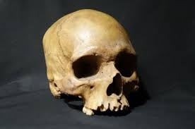

कपाल

कपाल या 'खोपड़ी' का आशय उन अस्थियों से है, जो सिर तथा चहरे को आकृति प्रदान करती हैं। मानव कपाल अस्थियों से बना हुआ है। यह गुंबज के समान उभरा हुआ कुछ चपटा, गोल तथा अंडे के आकार का होता है। निचले जबड़े को छोड़कर, जो केवल तंतुओं द्वारा जुड़ा रहता है, कपाल की सभी अस्थियाँ प्रौढ़ावस्था में आपस में पूर्णरूपेण जुड़ी रहती हैं। कपाल के सभी जोड़ अचल होते हैं। इसकी अस्थियों के टुकड़ों के किनारे आरे के दाँतों की भाँति होते हैं। एक अस्थि दूसरी अस्थि के खाँचे में पूर्ण रूप से संसक्त होती है। इस प्रकार इनमें किसी प्रकार की सापेक्ष गति नहीं होती। कपाल में अनेक गड्ढे तथा छिद्र होते हैं तथा उनमें संबंधित मांसपेशियाँ और स्नायु रहती है। नासिका गुहा में श्वास तथा गंध संबंधी संस्थान रहता है। मुख में स्वाद तथा भोजन की पाचन क्रिया आरंभ होती है। शंखास्थि में संतुलन तथा श्रवण संस्थान स्थित रहता है।
संरचना
मानव शरीर अस्थिपंजर का बना हुआ है। अस्थि के ऊपर मांसपेशी तथा त्वचा का आवरण रहता है। अस्थिपंजर शरीर को आकृति प्रदान करता तथा पुष्टि देता है; इसके अतिरिक्त शरीर के कोमल अंगों, जैसे- मस्तिष्क, फुफ्फुस, यकृत, प्लीहा आदि को सुरक्षित रखता है। मांसपेशियाँ भी इन्हीं अस्थियों के सहारे एक-दूसरे से संबंधित रहती हैं। नवजात शिशुओं में कपाल की अस्थियाँ पूर्ण रूप से संयुक्त नहीं होतीं। फलत: कपाल में ख़ाली स्थान होते हैं, जिन्हें हम त्वचा को छूकर ज्ञात कर सकते हैं। परंतु बड़े होने पर अस्थियाँ बढ़कर इन रिक्त स्थानों को ढक लेती हैं। जन्म के समय कपाल शरीर के अनुपात में बड़ा होता है। चेहरा कपाल के अनुपात में छोटा होता है। जैसे-जैसे आयु बढ़ती जाती है, चेहरा बड़ा होता जाता है तथा कपाल और शरीर का अनुपात भी ठीक होता जाता है।
कपाल के ऊपरी गोलार्ध पर, जन्म के समय अस्थियों का पूर्ण रूप से निर्माण न होने के कारण, रिक्त स्थानों पर कड़े बंधक तंतु रहते हैं। इन अस्थियों के सिरे पर आरे की भाँति दाँते उपस्थित नहीं रहते। कुछ स्थानों पर रिक्त स्थान अधिक बड़े होते हैं, जिन्हें 'फ़ॉण्टानेल' कहते हैं। ये पार्श्विकास्थि के चारों सिरों पर पाए जाते हैं। इनमें सबसे बड़ा आगे का फॉण्टानेल होता है, जो वर्गाकार होता है। यह ललाटास्थि तथा पार्श्विकास्थि के बीच में रहता है। यह लगभग 18 मास की आयु में बंद हो जाता है। पीछे का फॉण्टानेल त्रिकोणाकार होता है, जो पार्श्वास्थि तथा पीछे की अस्थि के बीच में स्थित रहता है। यह 16 मास की आयु में बंद हो जाता है। इस प्रकार जन्म से लेकर प्रौढ़ावस्था तक कपाल की अस्थियों के आकार प्रकार में परिवर्तन होते रहते हैं। परिणामस्वरूप इन अस्थियों से तथा दाँतों से आयु का पता लगाने में बहुत कुछ सहायता मिल सकती है, जैसे-
- प्रथम वर्ष की आयु के पश्चात् आगे के फ़ॉण्टानेल को छोड़कर सभी रिक्त स्थान बंद हो जाते हैं। शंखास्थ के चारों भाग आपस में जुड़ जाते हैं तथा नीचे के जबड़े की अस्थि के दोनों भाग भी आपस में जुड़ जाते हैं।
- इसी प्रकार 20 वर्ष की आयु के पश्चात् कपाल की सभी सीवनियाँ अदृश्य हो जाती हैं।
- कपाल से लिंग का ज्ञान भी हो सकता है। नारी का संपूर्ण कपाल और उसकी अलग-अलग अस्थियाँ भी पुरुष के कपाल की अपेक्षा छोटी होती हैं। परतु, फिर भी कपाल की अस्थियों द्वारा लिंग का निर्धारण कठिन कार्य है।
वर्गीकरण
कपाल की अस्थियों को दो भागों में विभाजित कर सकते हैं-
- मस्तिष्क का डिब्बा
- चेहरे को बनाने वाली अस्थियाँ
मस्तिष्क का डिब्बा
यह चपटी अस्थियों का बना हुआ रहता है। आठ अस्थियाँ आपस में जुड़कर एक बक्स बनाती हैं, जिसके भीतर शरीर का सबसे महत्वपूर्ण अंग मस्तिष्क सुरक्षित रहता है। अस्थियों का विवरण इस प्रकार है-
- ललाटास्थि
सामने की अस्थि को ललाटास्थि कहते हैं। यह अकेली एक अस्थि है। इसी अस्थि के द्वारा मानव ललाट या मस्तिष्क बनता है। जन्म के समय यह अस्थि ललाट सीवनी द्वारा दो भागों में विभक्त रहती है। प्रथम वर्ष की आयु में यह जोड़ विलीन होने लगता है और सात वर्ष की आयु तक पूर्णत: विलीन हो जाता है। यह जोड़ आजीवन रह भी सकता है।
- पार्श्विकास्थि
ललाटास्थि के पीछे कपाल की छत में दो आस्थियाँ होती हैं, जिन्हें पार्श्विकास्थियाँ कहते हैं। ये अस्थियाँ कपाल की छत में अगल-बगल, एक बाई और तथा दूसरी दाहिनी ओर स्थित रहती हैं। बीच में मिलकर ये कपाल की छत बनाती हैं। सिर के आकार के अनुसार ये अस्थियाँ कुछ गोलाकार लिए मुड़ी रहती हैं। इस अस्थि के चार किनारे होते हैं।
- शंखास्थि
दो अस्थियों द्वारा कनपटी का भाग बना हुआ है। इन अस्थियों को हम कनपटी की अस्थियाँ या शंखास्थि कहते हैं। कर्ण के दोनों ओर के छिद्र इन्हीं अस्थियों में होते हैं। दोनों ओर की इन अस्थियों में एक पतली नली होती है, जिसे 'कर्णनली' कहते हैं। यह मध्यकर्ण तक जाती है। कर्ण के छिद्र के पीछे यह अस्थि कुछ आगे की ओर निकली रहती है, जिसमें नीचे के जबड़े के दोनों ओर के सिरे हिलने-डुलने वाले जोड़ों से जुड़े रहते हैं। इस अस्थि के भीतरी भाग से कुछ त्रिकोण के आकार की अस्थि उठी रहती है, जिसके कारण कर्ण का आंतरिक भाग सुरक्षित रहता है।
- अनुकपालास्थि
कपाल का पिछला भाग अनुकपालास्थि द्वारा बना हुआ है। कपाल के पीछे के भाग में स्थित होने के कारण इसे खोपड़ी के पीछे की अस्थि भी कहते हैं। अनुकपालास्थि ऊपर की ओर दोनों पार्श्विकास्थियों से जुड़ी रहती है। इसके नीचे की ओर एक महाछिद्र होता है। इस छिद्र द्वारा सुषुम्ना निकलकर मेरुदंड की नली में जाती हैं, महाछिद्र के दोनों ओर दो किलों की भाँति आस्थियाँ निकली रहती हैं, जिन्हें कांडिल्स कहते हैं। अनुकपालास्थि के कांडिल मेरुदंड पर इस खूबी से रखे रहते हैं कि मनुष्य अपने सिर को आसानी से आगे झुका सकता है। इस अस्थि का बीच का भाग स्पंज के समान होता है। इसकी मोटाई सर्वत्र एक-सी नहीं होती; उभड़े हुए स्थानों पर तथा पूर्वीय आधारित भाग पर सबसे मोटी होती हैं, निचले भाग पर सबसे पतली होती है और यहाँ पर पारदर्शक भी हो सकती है।
- जतूकास्थि
इस अस्थि का आकार तितली की भाँति होता है। इस अस्थि में मध्य का भाग (शरीर) और दो पंख (छोटे तथा बड़े) होते हैं। ये पंख शरीर के दोनों पार्श्वों में होते हैं। यह अस्थि कपाल के निचले तथा अगल-बगल के भाग का निर्माण करती है। यह अस्थि कपाल की अनेक अस्थियों से जुड़ी रहती है।
- झर्झरास्थि
इस अस्थि में अनेक छिद्र होते हैं। इन छिद्रों द्वारा स्नायु सूत्र निकलकर नासिका में प्रवेश करते हैं। यह अस्थि नासिका की छत तथा नाक के गड्ढों की दीवार का कुछ भाग बनाती है। यह अस्थि जतूकास्थि से जुड़ी रहती है।
चेहरे की अस्थियाँ
चेहरे में कुल 14 अस्थियाँ होती हैं। इन्हीं 14 अस्थियों से मिलकर चेहरा बनता है। कपाल की अस्थियों के जोड़ों की भाँति चेहरे की अस्थियों का जोड़ भी प्राय: स्थिर तथा अचल होता है। केवल निचले जबड़े के जोड़ चल या हिलने-डुलने वाले होते हैं। चेहरे की अस्थियों का विवरण निम्नांकित है-
- नीचे के जबड़े की अस्थि
यह गिनती में एक होती है। यह अस्थि चिबुक बनाती है। इसके ऊपरी किनारों में 16 दांतों के लिए गड्ढे होते हैं। यह चेहरे की सबसे पुष्ट अस्थि होती है। कपाल की सभी अस्थियों में केवल नीचे के जबड़े की संधि ही चल संधि बनाती है। इसी कारण जबड़ा ऊपर नीचे और इधर-उधर घूम सकता है। मनुष्य अपना भोजन सुगमतापर्वूक इस चल संधि के कारण ही चबा सकता है। इस संधि का निर्माण भ्रूण में डेढ़ मास के लगभग आरंभ होता है। जन्म के समय यह अस्थि दो भागों में विभक्त रहती है और चिबुक के पास सौत्रिकतंतु द्वारा जुड़ी रहती है। प्रथम वर्ष की समाप्ति के बाद इस अस्थि के दोनों भाग आपस में पूर्ण रूप से जुड़ जाते हैं। युवावस्था में अस्थि शरीर के ऊपर तथा नीचे के किनारों के मध्य में 'मानसिक छिद्र' रहता है। बच्चों में यह छिद्र ऊपर के किनारे की अपेक्षा नीचे के किनारे के अधिक समीप रहता है। वृद्धावस्था में दाँतों के गिर जाने पर कोषगत उपांत का शोषण हो जाता है; फलत: मानसिक छिद्र नीचे के किनारे की अपेक्षा ऊपर के किनारे के अधिक समीप हो जाता है।
- ऊपर के जबड़े की अस्थियाँ
ये गिनती में दो होती हैं। ये अस्थियाँ मुँह की छत का कुछ भाग बनाने में सहायक होती हैं। प्रत्येक अस्थि के निचले भाग में 16 गड्ढे होते हैं, जिनमें दाँत फँसे रहते हैं। ये चेहरे की मुख्य अस्थियाँ हैं। इन अस्थियों से कपोलास्थि विवर बनता है। युवावस्था में इसकी ऊँचाई 3.5 सेंटीमीटर, चौड़ाई 2.5 सें.मी. तथा गहराई 3.0 सेंटीमीटर होती है। यह विवर भ्रूण में चौथे मास में बनना आरंभ होता है तथा जन्म के समय यह बहुत छोटा रहता है। प्रथम दंतोत्त्पत्ति के समय यह कुछ बढ़ता है, परंतु द्वितीय दंतोत्पत्ति के समय मुख्य रूप से बढ़ता है।
- नासिका की अस्थियाँ
ये अस्थियाँ गिनती में दो होती हैं। ये अस्थियाँ बीच में मिलकर दोनों नथुनों की बाहरी दीवार बनाती हैं। ऊपर की ओर ये ललाटास्थि से तथा पार्श्व में जबड़े की अस्थि से संयुक्त रहती हैं। नीचे की ओर ये नासिका की उपास्थि से जुड़ी रहती है। इसकी बाहरी सतह पर एक छिद्र होता है, जिसमें से एक शिरा निकलती है। इसकी भीतरी सतह पर एक लंबी प्रसीता होती है, जिसमें से पूर्वझर्झर रक्त वाहिनियाँ तथा नाड़ी निकलती है। नासिका की अस्थि का निर्माण भ्रूणावस्था में तीसरे मास से प्रारंभ होता है।
- कपोलास्थियाँ
ये गिनती में दो होती हैं। चेहरे में ये गालों के उभरे हुए भाग बनाती हैं। ये वास्तव में स्वतंत्र अस्थियाँ नहीं हैं। ये ऊपर के जबड़े की अस्थि उर्ध्वहन्वस्थि के प्रवर्धन मात्र हैं।
- मृदु अस्थियाँ
ये गिनती में दो होती हैं। ये अस्थियाँ नाक के भीतर होती हैं। इनकी आकृति सीपी की भाँति होती है और ये स्पंज के समान कोमल होती हैं। इन अस्थियों पर गुलाबी रंगकी श्लेष्मिक कला चढ़ी रहती है।
- अश्रु अस्थियाँ
ये गिनती में दो होती हैं। ये अस्थियाँ नेत्रकोटर की भीतरी दीवार में नासिका की ओर लगी रहती हैं। इनमें छिद्र होता है। इन्हीं छिद्रों द्वारा अश्रु नेत्र से नासिका में चला जाता है। यह अस्थि पीछे की ओर झर्झरास्थि से तथा आगे की ओर जबड़े की अस्थि से संयुक्त रहती है। इस अस्थि का निर्माण भ्रूण में 12 वें सप्ताह के लगभग प्रारंभ होता है।
- नासिका के पर्दे की अस्थि
यह केवल एक होती है और दोनों नथुनों के बीच में स्थित रहती है। इसी अस्थि द्वारा मानव नासिका दो नथनों में विभक्त रहती है।